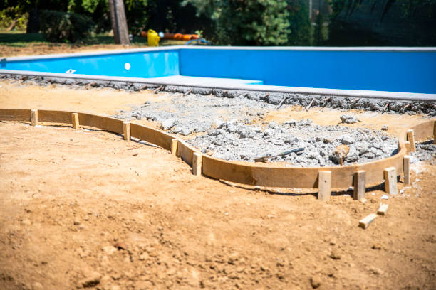

Paulsboro New Jersey
info@fancyjacuzzirepair.pro
Paulsboro New Jersey
info@fancyjacuzzirepair.pro

Keep your spa in perfect condition! Our Jacuzzi repair experts in Paulsboro New Jersey provide high-quality solutions tailored to your needs. Reliable service, excellent customer care, and guaranteed satisfaction.
Click Here To Call Us (877) 848-1711Is your Jacuzzi not functioning as it should? Our professional Jacuzzi repair company in Paulsboro New Jersey specializes in diagnosing and fixing all types of hot tub issues. From malfunctioning pumps and faulty heaters to cracked shells and broken jets, we have the expertise to bring your spa back to life. Whether it's a minor glitch or a major repair, our certified technicians are here to provide fast, reliable, and affordable solutions.
Regular maintenance and timely repairs are essential for extending the life of your Jacuzzi and ensuring it operates efficiently. Our team uses advanced tools and proven techniques to identify the root cause of problems and implement effective repairs. We also offer preventative maintenance plans to keep your hot tub in perfect condition all year round.
Why choose us? We’re committed to delivering unparalleled customer service and high-quality workmanship in Paulsboro New Jersey . Our locally trusted technicians are trained to work with all Jacuzzi brands and models, ensuring your spa receives the best care possible.
Don't let a faulty Jacuzzi ruin your relaxation time. Contact us today for expert Jacuzzi repair services in Paulsboro New Jersey and enjoy a hassle-free spa experience. We're here to make your hot tub as good as new!
Residential & commercial Jacuzzi repair
Quality services at affordable prices
Immediate 24/ 7 emergency services


Jacuzzis offer a relaxing retreat, but like any appliance, they can experience issues over time. At Jacuzzi repair, we specialize in identifying and fixing common Jacuzzi problems to ensure your spa experience is always perfect.
1. Jacuzzi Water Not Heating Up: One of the most common issues is water failing to reach the desired temperature. This could be due to a malfunctioning heater, thermostat issues, or a clogged filter. Our technicians in Paulsboro New Jersey will thoroughly inspect your system, identify the root cause, and quickly restore the proper heating functionality.
2. Jets Not Working Properly: If your Jacuzzi’s jets are weak or not functioning at all, it may be due to airlocks, blocked pipes, or pump failure. We have the expertise to clean, repair, or replace the necessary parts, ensuring your Jacuzzi jets operate smoothly, providing the optimal water pressure you expect.
3. Leaking Jacuzzi: Leaks can occur in various parts of your Jacuzzi, including the pipes, pump, or jets. A leak not only wastes water but also increases energy costs. Our team in Paulsboro New Jersey will locate the leak, fix the issue, and ensure your Jacuzzi remains leak-free and efficient.
4. Cloudy or Green Water: Cloudy or discolored water is often a sign of poor water circulation, filter problems, or chemical imbalances. We’ll evaluate your Jacuzzi’s filtration system and adjust the chemical levels to restore crystal-clear water.
At Jacuzzi repair, we offer prompt, professional Jacuzzi repair services in Paulsboro New Jersey ensuring your spa is always ready for use. Contact us today to schedule a service and experience the difference!
Residential & commercial Jacuzzi repair
Quality services at affordable prices
Immediate 24/ 7 emergency services
Plumbing issues can lead to frustrating malfunctions in your hot tub. At Jacuzzi repair, we provide comprehensive Jacuzzi plumbing repair and maintenance services that ensure your spa functions smoothly. Our expert team is trained to tackle everything from minor leaks to complex plumbing configurations, making sure every aspect of your system is operational. Regular maintenance not only helps prevent issues but also prolongs the life of your hot tub. With our focus on quality service and customer satisfaction, we are your go-to provider for all your plumbing needs in Paulsboro New Jersey .

Maintaining the right balance of chemicals in your Jacuzzi water is crucial for a safe and enjoyable experience. Poor water quality can lead to skin irritation and improper sanitation. At Jacuzzi repair, we offer professional water quality and chemical balancing services tailored to your specific spa requirements. Our skilled technicians utilize advanced testing methods to adjust chemicals, ensuring that your hot tub water is clean, safe, and inviting for you and your family in Paulsboro New Jersey .

Insulation plays a vital role in maintaining energy efficiency and comfortable temperatures in your hot tub. If your insulation is damaged or insufficient, it can lead to increased energy costs and uncomfortable experiences. At Jacuzzi repair, we specialize in Jacuzzi insulation repair and replacement services. Our expert team evaluates your insulation needs and provides solutions that enhance heat retention and overall performance. By choosing us, you're ensuring that your spa is energy efficient and enjoyable year-round. Our focus on quality craftsmanship ensures that your Jacuzzi operates effectively, saving you money on energy bills while keeping you comfortable.

To prolong the life of your Jacuzzi, regular maintenance is essential. At Jacuzzi repair, we offer a range of maintenance and seasonal services designed to keep your spa in peak condition. Our experienced technicians conduct thorough inspections and preventative measures, addressing potential issues before they become costly problems. Whether it’s spring cleaning before the hot season or winterization for cold weather, we have you covered. Our commitment to exceptional service and customer education ensures that you have the best experience with your hot tub. With our detail-oriented approach, your Jacuzzi will remain a source of relaxation for years to come.

Preparing your Jacuzzi for winter is crucial to prevent damage from freezing temperatures. Our specialized winterization services include thorough draining, insulating, and protective maintenance to ensure your hot tub withstands the winter months safely. At Jacuzzi repair, we ensure that you can focus on enjoying your hot tub during the warmer seasons, knowing that it’s been properly protected during the colder months in Paulsboro New Jersey .
Regular maintenance and cleaning are essential to the longevity and enjoyment of your jacuzzi. Our team offers comprehensive Jacuzzi maintenance and cleaning services covering everything from water testing and chemical balancing to thorough cleaning and inspections. By establishing a regular maintenance schedule, you can prevent larger issues and ensure optimal performance. Our expert team is committed to providing exceptional service, allowing you to enjoy a clean, safe, and inviting spa at all times.

Proper chemical treatment and water balancing are critical to ensuring a safe and enjoyable spa experience. Poorly balanced water can lead to skin irritation and equipment corrosion. Our jacuzzi chemical treatment and water balancing services in Paulsboro New Jersey are designed to provide comprehensive testing and adjustments, creating the ideal chemical environment for your hot tub. Our trained professionals use quality products and proven techniques to optimize your water chemistry, ensuring it remains sparkling clean and safe for you and your family.

Whether you’ve just installed a new jacuzzi or are bringing an existing one out of storage, proper start-up procedures are essential. Our jacuzzi start-up services include a thorough assessment of all systems, filling the tub, balancing the water, and ensuring all equipment is functioning correctly. During the start-up process, we provide valuable tips and advice for maintaining your spa, so you can enjoy it to the fullest. Trust our team to help you get started on the right foot, ensuring a safe and pleasurable hot tub experience.

A quality spa cover is essential for maintaining water temperature and cleanliness, as well as protecting your hot tub from the elements. When your cover becomes damaged, it may need repair or replacement. At Jacuzzi repair, we specialize in spa cover repair and replacement services, utilizing durable materials that ensure long-lasting protection for your Jacuzzi. Trust us to enhance your hot tub’s efficiency and appearance here in Paulsboro New Jersey .
Years Experience
Expert Technicians
Satisfied Clients
Compleate Projects
At Fancy Jacuzzi Repair, we understand the importance of a fully functioning jacuzzi to your relaxation and comfort. Serving Paulsboro New Jersey and the surrounding areas, our team is dedicated to providing top-notch jacuzzi repair services that ensure your spa experience is never interrupted. Whether it’s a minor issue or a major malfunction, we’ve got you covered with expert solutions tailored to your specific needs.
Why trust Fancy Jacuzzi Repair? Our certified technicians possess extensive experience working with all jacuzzi brands and models, using the latest diagnostic tools and techniques to identify and fix any issues quickly and effectively. We pride ourselves on our prompt and reliable service, ensuring that your jacuzzi is up and running without unnecessary delays.
When you choose us, you’re choosing a company that prioritizes customer satisfaction. Our commitment to delivering exceptional service is matched by our transparent pricing and comprehensive warranty on all repairs. Whether you need routine maintenance or urgent repairs, our team is always ready to assist you with affordable, high-quality solutions.
Fancy Jacuzzi Repair has earned a reputation as the trusted name for jacuzzi repair in Paulsboro New Jersey thanks to our proven track record of excellence and attention to detail. We go the extra mile to ensure your jacuzzi is restored to optimal condition, so you can enjoy peace of mind and ultimate relaxation. Choose us for reliable jacuzzi repair you can count on!
When it comes to enjoying your spa experience, a well-functioning Jacuzzi pump is vital. At Jacuzzi repair, we specialize in Jacuzzi pump repairs that guarantee optimal performance. Our certified technicians understand the mechanics of all pump models, ensuring comprehensive diagnostics and efficient repair solutions. Whether your pump is making unusual noises or is failing to circulate water, our team is equipped to restore it to like-new condition. We use high-quality replacement parts and the latest techniques to ensure durability. Choose us because we are dedicated to providing timely and effective service with a customer-first approach. Plus, we offer a straightforward warranty on our repairs, giving you peace of mind.
Imagine stepping into your hot tub only to find the water is cooler than expected. A malfunctioning heater can ruin the relaxation you deserve. Our hot tub heater repair services in Paulsboro New Jersey are designed to identify and resolve heating problems quickly and efficiently. We understand the importance of having a fully functioning heater, especially during chilly seasons. Our team utilizes the latest diagnostic tools to pinpoint the issue—whether it’s a broken thermostat, clogged filters, or a faulty heating element—and we provide reliable repairs that restore comfort to your hot tub. Rely on our expertise to keep your hot tub at the perfect temperature year-round.
A leak in your jacuzzi can cause significant water loss and damage to your property if left unchecked. At Jacuzzi repair, we understand the urgency and potential problems associated with water leaks in your hot tub. Our leak detection specialists employ advanced techniques, including pressure testing and underwater cameras, to locate leaks without invasive measures. Once detected, we provide effective repair solutions to ensure your jacuzzi returns to its full functionality. With our commitment to excellence and customer satisfaction, we guarantee that our leak detection and repair services will leave you with peace of mind and a fully operational jacuzzi. Don’t let leaks dampen your enjoyment; contact Jacuzzi repair for reliable jacuzzi leak detection and repair .
Is your jacuzzi motor making unusual sounds, struggling to perform, or failing to start? The motor is a vital component that powers multiple functionalities of your jacuzzi. At Jacuzzi repair, our team specializes in jacuzzi motor repair, ensuring that your spa functions smoothly and efficiently. We offer comprehensive assessments to diagnose any motor-related issues quickly, using only the highest quality replacement parts to ensure lasting repairs. Our technicians are trained to service a wide range of jacuzzi models, providing professional repairs that enhance performance and extend the life of your hot tub. Choose Jacuzzi repair for dedicated jacuzzi motor repair services that prioritize your comfort and satisfaction.
Jets are what make your hot tub enjoyable, providing soothing massage and relaxation. When jets are clogged, broken, or malfunctioning, the experience can be compromised. Our jacuzzi jet repair and replacement services in Paulsboro New Jersey ensure that every jet in your spa delivers the right pressure and functionality. We handle a variety of jet types, including adjustable and directional jets, and have the expertise to repair or replace them with high-quality alternatives. Trust our experienced team to enhance your spa's performance, making it a retreat you’ll always look forward to.
The control panel of your jacuzzi is your command center, allowing you to manage all its features comfortably. When it malfunctions, it can significantly diminish your spa experience. At Jacuzzi repair, we specialize in jacuzzi control panel repair, providing you with the expertise needed to fix any issues. Our technicians are well-versed in the latest control panel technologies and can troubleshoot problems efficiently. Whether it’s a display error, malfunctioning buttons, or connectivity issues, we ensure a seamless repair process, restoring full functionality to your jacuzzi control panel. Choose Jacuzzi repair for professional, reliable control panel repair services in Paulsboro New Jersey to get back to enjoying your hot tub with ease.
Inconsistent water pressure can significantly affect the performance of your jacuzzi, leading to a subpar depth of water, insufficient jet pressure, or even operational failure. At Jacuzzi repair, we specialize in diagnosing and repairing water pressure issues in jacuzzis. Our expert technicians utilize modern tools and techniques to identify the source of the problem quickly, whether it be clogged filters, broken pumps, or faulty valves. We provide actionable solutions designed to restore proper water circulation and pressure, ensuring your hot tub operates at peak performance. Trust Jacuzzi repair for effective water pressure issues repair services in Paulsboro New Jersey that deliver results you can rely on.
Electrical issues within your jacuzzi can be complex and potentially dangerous. From faulty wiring to blown fuses, any electrical concern must be addressed by certified professionals. At Jacuzzi repair, our team specializes in identifying and resolving jacuzzi electrical issues swiftly and safely. We possess extensive knowledge of jacuzzi wiring systems and utilize advanced diagnostic tools to pinpoint problems accurately. Our commitment to safety and quality ensures that all repairs are performed up to industry standards. Don’t take chances with electrical issues—contact Jacuzzi repair for expert jacuzzi electrical troubleshooting and repair services and enjoy peace of mind knowing your spa is in good hands.
Efficient water circulation is critical to maintaining clean and safe hot tub water. If you notice cloudy water or ineffective filtration, it’s likely due to circulation problems. Our technicians specialize in diagnosing water circulation issues related to pumps, filters, and skimmers in Paulsboro New Jersey . We conduct a thorough assessment to identify the cause of the problem and implement effective solutions, ensuring your hot tub water is pristine and ready for enjoyment. Our commitment to quality service means you can trust us to enhance your spa’s water circulation systems.
A clean filter is crucial for maintaining water quality in your Jacuzzi. When it's time for a filter replacement, turn to Jacuzzi repair for reliable service. Our skilled technicians will help you select the right filter based on your spa model and usage needs. We recommend routine filter replacements to promote efficient water filtration, ensuring you and your family can enjoy a crystal-clear soak. We offer high-quality filters and expert replacement services to keep your hot tub functioning optimally. Trust our knowledgeable team to enhance the longevity and performance of your spa with our commitment to customer satisfaction and environmental responsibility.
Not all Jacuzzi issues fit neatly into a predefined box, and sometimes you need specialized services tailored to unique problems. At Jacuzzi repair, we offer a wide range of specialized Jacuzzi repair services that address even the most intricate challenges. Whether you’re dealing with unique electrical configurations or rare models, our team possesses the experience and versatility to resolve issues effectively. Join the satisfied customers throughout Paulsboro New Jersey who trust us with all their specialized Jacuzzi repair needs.
Ozone systems are an essential part of modern hot tub maintenance, providing an eco-friendly way to keep water clean. If your system is malfunctioning, it can lead to poor water quality and increased chemical usage. At Jacuzzi repair, we offer expert ozone system repair services, ensuring that your hot tub remains clean and efficient. Our knowledgeable technicians understand the importance of maintaining adequate levels of ozone to enjoy a healthy spa experience in Paulsboro New Jersey .
Over time, the shell of your hot tub can suffer from wear and tear, leading to unsightly cracks, fading, and discoloration. Our hot tub resurfacing and reconditioning services can restore your spa to its former glory. We use high-quality materials and state-of-the-art techniques to repair and refinish the surface of your hot tub, ensuring it looks new and inviting. Our reconditioning services also enhance the longevity of your spa, protecting it from future damage. Trust us to revitalize your hot tub and make it a centerpiece of relaxation in your home.
Keeping your Jacuzzi in optimal condition often requires recalibration and diagnostic services. At Jacuzzi repair, we offer thorough inspections and recalibration services to ensure that all components of your spa are functioning harmoniously. Our team utilizes advanced diagnostic tools to assess performance, pinpoint irregularities, and adjust settings accordingly. By trusting us with this important maintenance task, you can enjoy peace of mind knowing that your hot tub operates safely and efficiently. We pride ourselves on our commitment to quality and meticulous attention to detail, ensuring you get the most out of your investment.
An effective drainage system is vital for maintaining the cleanliness and hygiene of your hot tub. Blockages or leaks can lead to significant issues if not addressed promptly. Our jacuzzi drainage system repair service focuses on restoring proper drainage to prevent water pooling and damage. We assess the entire system, looking for blockages, damages, or improper installation. Our experienced technicians have the expertise to implement comprehensive repairs that restore the function of your drainage system and enhance the longevity of your jacuzzi while ensuring user safety.
The blower in your jacuzzi is responsible for creating those relaxing bubbles that enhance your soaking experience. If your jacuzzi is not producing bubbles or if the blower is making strange noises, it’s time for a repair or replacement. Our jacuzzi blower repair service includes comprehensive diagnostics to identify the issue and restore normal functionality. We specialize in repairing existing blowers or providing high-quality replacements to ensure your spa continues to deliver the ultimate relaxation experience. Our fast, reliable service helps you get back to enjoying your hot tub quickly.
The ambiance of your hot tub can greatly affect your overall experience, and lighting plays a crucial role in creating the perfect atmosphere. If your Jacuzzi lights are flickering or malfunctioning, reach out to Jacuzzi repair. Our lighting repair services involve diagnosing the issue, whether it’s faulty wiring, broken fixtures, or component failures. We carry high-quality replacement parts to ensure your lighting is as bright and inviting as ever. Our dedication to providing exceptional service means we’ll make your Jacuzzi a relaxing retreat you’ll love to spend time in, even after the sun sets.
A damaged shell can compromise the integrity of your hot tub and diminish your enjoyment. At Jacuzzi repair, we specialize in hot tub shell repairs that restore both appearance and functionality. Our skilled technicians use advanced techniques to repair cracks, chips, and surface blemishes, ensuring your spa looks as good as new. We take pride in our craftsmanship, and our repairs are designed to last, helping you extend the life of your hot tub. Trust us to address your shell repair needs with professionalism and a customer-focused approach, ensuring you receive the quality service and results you deserve.
Maintaining your Jacuzzi after a repair is crucial to ensure its longevity and optimal performance. Whether you’ve recently had repairs done to your Jacuzzi in Paulsboro New Jersey proper upkeep can prevent future issues and maintain a relaxing, therapeutic experience.
Regular Cleaning
To maintain your Jacuzzi, clean the filters regularly. A clean filter ensures the water remains free of debris and the pump works efficiently. Cleaning the filter at least once every 2-4 weeks is recommended. Additionally, always clean the interior surfaces to remove dirt, oils, and soap scum build-up.
Check the Water Chemistry
Balanced water is key to the health of your Jacuzzi and your skin. After any repair, ensure the pH, alkalinity, and sanitizer levels are properly balanced. Test your water at least once a week to avoid damage to the tub and its components.
Inspect the Jets and Plumbing
After a repair, pay close attention to your Jacuzzi’s jets. Make sure they are functioning smoothly and that no air bubbles are coming from the wrong places. Regular inspection of the plumbing system will help catch any leaks or blockages early, preventing costly repairs later on.
Cover Your Jacuzzi
When not in use, keep your Jacuzzi covered to protect it from the elements. A high-quality cover will help keep debris out, reduce energy consumption, and maintain water temperature.
Professional Maintenance
If you notice any issues after your repair, don’t hesitate to call a professional. Expert Jacuzzi maintenance services in Paulsboro New Jersey can address potential problems before they become major issues.
By following these simple maintenance tips, you can ensure your Jacuzzi remains in great condition long after your repair in Paulsboro New Jersey . Proper care will extend the life of your tub and provide many years of enjoyable, stress-free use.
Paulsboro is a borough situated on the banks of the Delaware River within Gloucester County, in the U.S. state of New Jersey, within the Philadelphia metropolitan area. As of the 2020 United States census, the borough's population was 6,196, an increase of 99 (+1.6%) from the 6,097 recorded at the 2010 census, which in turn had reflected a decline of 63 (−1.0%) from the 6,160 counted at the 2000 census. Paulsboro and surrounding Gloucester County constitute part of South Jersey.
Loud noises may result from a faulty pump or motor. Our Paulsboro New Jersey technicians can inspect and resolve the issue.
Yes, all our technicians are certified and highly experienced in providing top-quality Jacuzzi repair services .
Absolutely! Fancy Jacuzzi Repair offers emergency repair services to address urgent issues and get your Jacuzzi running smoothly.
Regular maintenance and prompt attention to small issues can prevent major repairs. We offer maintenance services .
Yes, we provide repair services for both residential and commercial Jacuzzi systems in Paulsboro New Jersey .
Circulation issues are often due to a clogged filter or pump malfunction. We can fix this efficiently .
Yes, we specialize in repairing Jacuzzis of all makes, models, and ages across Paulsboro New Jersey .
If your Jacuzzi water isn't heating or takes too long to heat, it may indicate a heater issue. Our experts can inspect and repair it promptly.
Most repairs are completed within 1-2 hours, but the timeline depends on the complexity of the issue.
Yes, we use advanced tools to detect and repair Jacuzzi leaks efficiently .
Yes, we specialize in addressing water pressure issues to restore your Jacuzzi's functionality in Paulsboro New Jersey .
Fancy Jacuzzi Repair offers a wide range of Jacuzzi repair services including fixing leaks, pump and motor repairs, jet replacements, heater issues, and more.
Yes, we carry high-quality replacement parts to ensure durable and reliable repairs .
Absolutely! Our repair services in Paulsboro New Jersey are fully insured for your protection.
Jacuzzi jets often stop working due to clogged filters, airlocks, or pump issues. Our team in Paulsboro New Jersey can quickly diagnose and fix these problems.
Yes, we can enhance your Jacuzzi with new jets, control systems, and other modern upgrades .
Yes, we offer repair and replacement services for damaged Jacuzzi covers .
Yes, we offer free estimates for all Jacuzzi repairs to help you understand the scope and cost of the work.
Yes, we are experienced in repairing or replacing faulty control panels for Jacuzzis in Paulsboro New Jersey .
Whenever possible, we offer same-day repair services for urgent needs.
We pride ourselves on fast response times. In most cases, we can schedule your Jacuzzi repair within 24-48 hours.
Contact Fancy Jacuzzi Repair immediately! Our team in Paulsboro New Jersey will troubleshoot and resolve the issue quickly.
Our fast, reliable, and affordable services, combined with expert technicians, make us the top choice for Jacuzzi repairs in Paulsboro New Jersey .
Regular maintenance every 3-6 months is recommended to keep your Jacuzzi in optimal condition. We offer maintenance plans .
Common issues include pump malfunctions, heater failures, leaks, and jet blockages, all of which we expertly handle .
We accept various payment methods, including cash, credit cards, and online payments, for our services .
Repair costs vary depending on the issue, but we provide competitive pricing and transparent quotes.
Fancy Jacuzzi Repair serves all neighborhoods and surrounding areas in Paulsboro New Jersey .
You can call us or book online to schedule your repair appointment .
Yes, we provide warranties on our repairs to ensure your satisfaction and peace of mind in Paulsboro New Jersey .
Wonderful service from Fancy Jacuzzi Repair! They were able to get my jacuzzi fixed quickly and efficiently. The team was friendly and professional, and I couldn’t be happier with the results!
Profession
Great experience with Fancy Jacuzzi Repair! The technicians were courteous and professional, and they fixed my jacuzzi in no time. I will certainly use them again in the future for all my jacuzzi repair needs in Paulsboro New Jersey
Profession
I highly recommend Fancy Jacuzzi Repair to anyone in Paulsboro New Jersey . They were prompt, professional, and did an excellent job fixing my jacuzzi. I’ll definitely use them for future repairs!
Profession
Paulsboro NJ Jacuzzi repair Pros
(877) 848-1711
info@fancyjacuzzirepair.pro
09.00 AM - 09.00 PM
09.00 AM - 12.00 PM